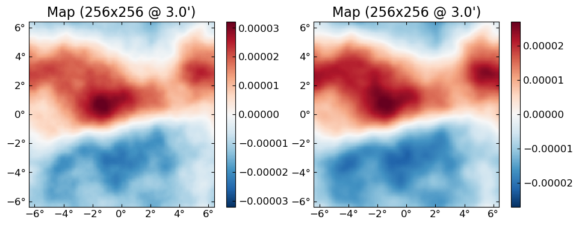
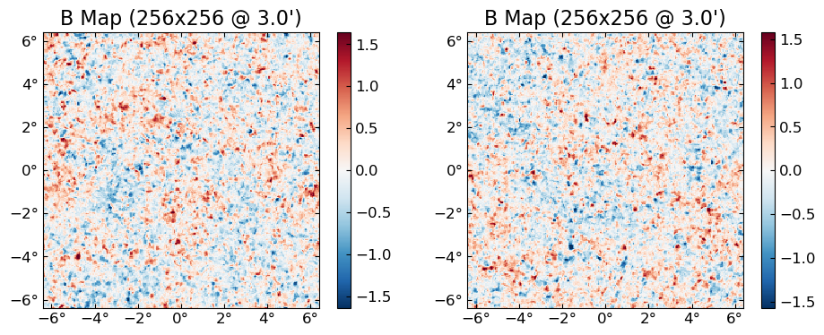
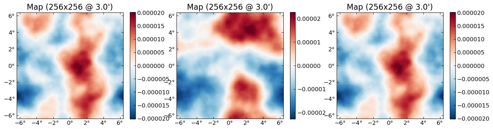

GPU
CMBLensing uses CUDA.jl for GPU functionality.
To use CUDA.jl, you'll need an Nvidia GPU and a recent version of the CUDA libraries.
NERSC-specific instructions: On NERSC, just load the modules cudnn/7.6.5 and cuda/10.2.89 (other versions may work but those have been tested) and add export JULIA_CUDA_USE_BINARYBUILDER=false to your bashrc.
See also install instructions for more info.
CUDA basics
We'll need these packages:
using CUDA, Adapt, CMBLensing, Random, PyPlotTo check everything loaded correctly:
CUDA.device()CuDevice(0): GeForce GTX 1080 TiCUDA.functional()trueCUDA.jl provides an array type called CuArray which is an array that resides on GPU. You can convert Arrays to CuArrays via the adapt function:
x_cpu = rand(128,128)
x_gpu = adapt(CuArray, x_cpu)128×128 CuArray{Float64,2}:
0.888712 0.824356 0.214376 … 0.755596 0.0433143 0.401218
0.860261 0.363934 0.758443 0.463215 0.438527 0.188045
0.486457 0.676236 0.265082 0.596669 0.633011 0.21782
0.922882 0.309495 0.372102 0.414542 0.851956 0.0997972
0.453549 0.502549 0.428112 0.238626 0.755366 0.611219
0.632588 0.812622 0.438778 … 0.229711 0.121807 0.358687
0.469266 0.0297919 0.0228982 0.287558 0.972336 0.338394
0.241879 0.375037 0.822643 0.458313 0.110923 0.0838822
0.147324 0.757712 0.416574 0.0792948 0.135277 0.95459
0.464468 0.515546 0.119434 0.392862 0.4709 0.334125
0.0577308 0.87099 0.286543 … 0.899621 0.349562 0.430823
0.460388 0.100913 0.2076 0.977196 0.225323 0.435314
0.38272 0.244247 0.468403 0.0425952 0.0149343 0.646776
⋮ ⋱ ⋮
0.342943 0.335381 0.377471 0.21693 0.812999 0.130155
0.66669 0.882168 0.967924 0.452162 0.0283182 0.781631
0.638998 0.371818 0.765243 0.0793586 0.380983 0.114074
0.0782665 0.167665 0.0335096 0.683306 0.719988 0.243631
0.859202 0.684524 0.0153715 … 0.826599 0.704447 0.270195
0.813795 0.964202 0.573068 0.165017 0.935501 0.744723
0.710874 0.314973 0.679694 0.246932 0.600466 0.794401
0.00634085 0.681718 0.78005 0.00949546 0.607457 0.697644
0.730091 0.535872 0.270631 0.420004 0.119571 0.692749
0.272711 0.645471 0.593968 … 0.903481 0.318548 0.279162
0.766253 0.89805 0.0506585 0.411019 0.947068 0.470326
0.0673976 0.96246 0.796442 0.937663 0.143763 0.847439Any operations you now to do x_gpu are done on GPU and are super fast (although benchmarking can be subtle):
2 * x_gpu + x_gpu # happened on GPU128×128 CuArray{Float64,2}:
2.66614 2.47307 0.643129 2.05436 … 2.26679 0.129943 1.20365
2.58078 1.0918 2.27533 0.812263 1.38964 1.31558 0.564134
1.45937 2.02871 0.795247 2.10365 1.79001 1.89903 0.653459
2.76865 0.928484 1.11631 2.65855 1.24363 2.55587 0.299392
1.36065 1.50765 1.28434 0.731794 0.715879 2.2661 1.83366
1.89776 2.43787 1.31634 1.06633 … 0.689134 0.365422 1.07606
1.4078 0.0893757 0.0686946 2.45819 0.862674 2.91701 1.01518
0.725638 1.12511 2.46793 2.58974 1.37494 0.332768 0.251647
0.441972 2.27313 1.24972 1.47896 0.237884 0.405831 2.86377
1.3934 1.54664 0.358303 1.21855 1.17859 1.4127 1.00237
0.173192 2.61297 0.859628 2.33799 … 2.69886 1.04869 1.29247
1.38117 0.302738 0.622801 0.252359 2.93159 0.675968 1.30594
1.14816 0.732742 1.40521 2.86669 0.127786 0.0448029 1.94033
⋮ ⋱ ⋮
1.02883 1.00614 1.13241 2.15201 0.650791 2.439 0.390466
2.00007 2.6465 2.90377 0.797989 1.35649 0.0849547 2.34489
1.91699 1.11545 2.29573 2.84374 0.238076 1.14295 0.342221
0.234799 0.502996 0.100529 2.7511 2.04992 2.15996 0.730892
2.5776 2.05357 0.0461144 2.03738 … 2.4798 2.11334 0.810584
2.44139 2.89261 1.7192 0.157185 0.495052 2.8065 2.23417
2.13262 0.944918 2.03908 2.11185 0.740797 1.8014 2.3832
0.0190226 2.04515 2.34015 2.55586 0.0284864 1.82237 2.09293
2.19027 1.60762 0.811894 2.44158 1.26001 0.358713 2.07825
0.818132 1.93641 1.7819 2.24219 … 2.71044 0.955644 0.837486
2.29876 2.69415 0.151975 2.74334 1.23306 2.8412 1.41098
0.202193 2.88738 2.38933 2.58541 2.81299 0.431288 2.54232Note we also have three shorthands for using adapt:
cu(x) = adapt(CuArray{Float32}, x)gpu(x) = adapt(CuArray, x)cpu(x) = adapt(Array, x)
CMBLensing GPU basics
CMBLensing fields can be put on GPU in exactly the same way.
f_cpu = FlatMap(rand(128,128))
f_gpu = cu(f_cpu)16384-element 128×128-pixel 1.0′-resolution FlatMap{CuArray{Float32,2},ProjLambert{Float32}}:
0.69471073
0.18825004
0.5484901
0.43423572
0.8342005
0.93333364
0.2082479
0.040642317
0.022252865
0.6725115
0.86915433
0.7677295
0.67226666
⋮
0.17374569
0.9538183
0.725677
0.45780742
0.15167615
0.47352484
0.21508026
0.99338794
0.8053882
0.23090039
0.32536042
0.082422785Everything you can do to a CPU Field object you can do to a GPU one.
f_gpu' * (2 * Fourier(f_gpu))11048.801f0cu(x) works recursively through most objects, for example through NamedTuples:
(x=f_cpu, y=f_cpu) |> typeofNamedTuple{(:x, :y),Tuple{FlatMap{Array{Float64,2},ProjLambert{Float64}},FlatMap{Array{Float64,2},ProjLambert{Float64}}}}cu((x=f_cpu, y=f_cpu)) |> typeofNamedTuple{(:x, :y),Tuple{FlatMap{CuArray{Float32,2},ProjLambert{Float32}},FlatMap{CuArray{Float32,2},ProjLambert{Float32}}}}You can move an entire DataSet to GPU too with cu(ds), which recursively moves all the fields and operators inside this object to GPU:
@unpack ds, ϕ = load_sim(Nside=256, θpix=3, pol=:P);ds.d |> typeofFlatEBFourier{Array{Complex{Float32},3},ProjLambert{Float32}}cu(ds).d |> typeofFlatEBFourier{CuArray{Complex{Float32},3},ProjLambert{Float32}}You can also generate the DataSet directly on GPU, which is often much faster:
@unpack ds, ϕ = load_sim(Nside=256, θpix=3, pol=:P, storage=CuArray);Once you have the DataSet object on GPU, all the normal high-level operations work on it, e.g.:
fJ,ϕJ = MAP_joint(ds, nsteps=10, progress=true);[32mMAP_joint: 100%|████████████████████████████████████████| Time: 0:00:03[39m
[34m step: 10[39m
[34m χ²: 131546.67[39m
[34m Ncg: 3[39mplot([ϕ ϕJ])
Batching
Just moving a DataSet to GPU will give you factors of about 2 - 10 speeds over CPU for Nside of 128 - 1024. You can go even faster by "batching," which means doing the same operations to multiple fields at once, i.e. in "batches". The trick is that by putting multiple fields together into a single array, you reduce the number of GPU kernel calls needed as compared to simply looping over each field. This saves on the overhead of launching GPU kernels, and also often leads to accessing memory in a more efficient order.
Suppose you had 10 fields on GPU that you want to lense:
fs = [simulate(ds.Cf) for i=1:10]
ϕs = [simulate(ds.Cϕ) for i=1:10];You could do the following, and it might still be a little faster than doing it sequentially:
f̃s = [LenseFlow(ϕ)*f for (f,ϕ) in zip(fs,ϕs)];But the really fast way to do it is pack those 10 fields into a batched field (note the indication these are batched in the printed type information):
f_batch = batch(fs)660480-element 256×256(×10)-pixel 3.0′-resolution FlatEBFourier{CuArray{Complex{Float32},4},ProjLambert{Float32}}:
-0.0f0 + 0.0f0im
-2301.2195f0 + 3890.6575f0im
1402.1482f0 - 1060.4792f0im
2784.424f0 - 1058.4165f0im
-6349.881f0 - 975.9f0im
-5671.7495f0 - 2040.648f0im
5136.4106f0 + 1033.1976f0im
3956.7527f0 - 1917.7516f0im
-2445.4238f0 + 5727.068f0im
-745.9911f0 + 2247.4934f0im
2321.3606f0 - 1559.7291f0im
-5977.503f0 - 918.05707f0im
11611.693f0 + 2215.5535f0im
⋮
-0.19412468f0 - 0.0999459f0im
-0.016718278f0 - 0.028271351f0im
-0.038219225f0 + 0.32705364f0im
-0.5447439f0 + 0.04154071f0im
0.4000634f0 + 0.21026817f0im
-0.08811981f0 - 0.060519397f0im
-0.36888558f0 + 0.1240009f0im
0.21560057f0 + 0.12047562f0im
0.21522556f0 + 0.13484338f0im
0.07516799f0 + 0.09902366f0im
-0.07842841f0 + 0.17105842f0im
-0.40802157f0 + 0.1223103f0imϕ_batch = batch(ϕs)330240-element 256×256(×10)-pixel 3.0′-resolution FlatFourier{CuArray{Complex{Float32},4},ProjLambert{Float32}}:
-0.0f0 + 0.0f0im
-0.11784365f0 + 0.15110476f0im
-0.033175457f0 + 0.05291853f0im
-0.016406303f0 - 0.014861722f0im
-0.0018492909f0 + 0.0027736907f0im
-9.4121046f-5 - 0.0059507038f0im
-0.0046190238f0 + 0.008091824f0im
7.6152304f-5 + 0.00025117077f0im
-0.0008192814f0 - 0.0023286326f0im
-0.0032511519f0 + 0.00082712807f0im
-0.00013448531f0 + 0.001952219f0im
-0.0018322299f0 + 0.0016523694f0im
-0.000556706f0 + 0.001031771f0im
⋮
1.1116966f-6 - 5.1770786f-7im
-5.3246663f-7 + 2.7610977f-7im
-2.0456389f-7 + 2.0728794f-6im
-2.1983196f-7 - 5.1164864f-7im
4.3068616f-7 + 5.444814f-7im
5.3897463f-7 + 1.2132183f-6im
3.334543f-7 - 2.5980754f-7im
1.9971692f-6 + 1.07297346f-7im
-4.118542f-7 - 1.1147516f-7im
1.6722242f-6 + 1.7814434f-8im
-2.3373966f-7 + 1.462492f-7im
1.13650565f-7 - 1.2209858f-6imAnd then run the lensing operation once, which will lense each of the 10 fs by the corresponding ϕ.
f̃_batch = LenseFlow(ϕ_batch) * f_batch1310720-element 256×256(×10)-pixel 3.0′-resolution FlatQUMap{CuArray{Float32,4},ProjLambert{Float32}}:
-1.4679776
-2.0485938
0.23991281
0.20982413
-0.42936718
-2.967942
-1.9101936
-1.3053963
-1.1134857
-3.3083956
-4.214875
-6.73863
-5.332464
⋮
1.1316952
1.8423452
1.8628787
-2.643449
-4.822819
-1.0603839
3.825707
1.9785323
-1.6165124
-3.4116428
-3.8029394
-2.3072338Speedups over simple looping will depend significantly on how good your GPU hardware is, but e.g. for the problem size of Nside=256 on a Tesla V100, doing this batch of 10 lenses is almost no slower than doing a single one.
You can get the individual fields out of the batched result with batch_index, e.g. the first 2 (out of 10) lensed B fields:
plot([batch_index(f̃_batch,1) batch_index(f̃_batch, 2)], which=:Bx)
f[!,i] is short-hand for batch_index(f,i), meant to be used when doing interactive work:
f_batch[!,1] == batch_index(f_batch,1)trueNormal broadcasting rules apply between batched and non-batched fields, so e.g.:
LenseFlow(ϕ) * f_batch1310720-element 256×256(×10)-pixel 3.0′-resolution FlatQUMap{CuArray{Float32,4},ProjLambert{Float32}}:
-1.4941235
-0.9914128
1.0198733
0.88523036
-0.6625598
-3.2031393
-2.0574992
-1.7696751
-1.2420458
-3.2735085
-4.4636745
-6.023631
-6.9492006
⋮
1.3844602
3.487194
3.0349822
-1.9964567
-3.3094363
1.3220795
2.9720027
0.91866386
-2.3997512
-4.35118
-6.19135
-6.4957414works and lenses the 10 different fields in f_batch by the same (non-batched) ϕ.
Most of CMBLensing works with batched fields just like with normal fields. This includes things like lnP, conjugate_gradient, sample_joint, or MAP_joint (although MAP_marg only works with non-batched fields, but will be fixed in the future).
Multiple GPUs
For multi-GPU runs, the easiest way currently is to use one Julia process per GPU. See also the section of the CUDA.jl documentation here. (Note, this is under active developement and it seems likely in the future it will become easier to use multiple GPUs from the same process, saving on memory and startup cost.)
If all your GPUs are on one node, you can use the following code snippet to set up parallel GPUs. Here e.g. we have 4 GPUs, so we launch 4 worker processes:
using Distributed
addprocs(4, exeflags="--project=@.")
@everywhere using CMBLensing
CMBLensing.assign_GPU_workers()GPU_worker_info:
(master = 1, host = n0299.savio2, device = CuDevice(0): GeForce GTX 1080 Ti 04321c79)
(worker = 2, host = n0299.savio2, device = CuDevice(1): GeForce GTX 1080 Ti eb8fcbf6)
(worker = 3, host = n0299.savio2, device = CuDevice(2): GeForce GTX 1080 Ti 5b58bff4)
(worker = 4, host = n0299.savio2, device = CuDevice(3): GeForce GTX 1080 Ti 0493ddcc)
(worker = 5, host = n0299.savio2, device = CuDevice(0): GeForce GTX 1080 Ti 04321c79)Now you can use normal Julia parallel constructs to assign work to each GPU. E.g., we can lense each of the batched maps above on separate GPUs:
batch(pmap(fs, ϕs) do f,ϕ
LenseFlow(ϕ) * f
end)1310720-element 256×256(×10)-pixel 3.0′-resolution FlatQUMap{CuArray{Float32,4},ProjLambert{Float32}}:
-1.4679776
-2.0485938
0.23991281
0.20982413
-0.42936718
-2.967942
-1.9101936
-1.3053963
-1.1134857
-3.3083956
-4.214875
-6.73863
-5.332464
⋮
1.1316952
1.8423452
1.8628787
-2.643449
-4.822819
-1.0603839
3.825707
1.9785323
-1.6165124
-3.4116428
-3.8029394
-2.3072338Note that CPU and GPU fields are completely serializable and can be sent back and forth to worker processes, such as happened above. When a GPU fields is sent, it will be copied to the worker's GPU transparently. However, note that it has to pass through CPU memory, so there is sizeable overhead. E.g., in the example above, its much faster to perform the batch lense on 1 GPU rather than split across the 4. Indeed, parallel constructs like this are mainly useful for parallelizing over larger workloads where the overhead is insignificant.
For multi-GPU multi-node jobs, its recommended to set up Julia workers via MPIClusterManagers.jl. CMBLensing.assign_GPU_workers() works with multi-node jobs as well (and knows to assign GPUs to workers only on the same node).
Gotchas
Not much, hopefully. If something that works on CPU doesn't work on GPU, please file an Issue.
One thing to keep in mind is that CPU and GPU use different random number generators, so seeds will not correspond. Note however you can force a GPU simulation to use the CPU RNG by passing rng=MersenneTwister().
plot(permutedims(cpu.([
simulate(cpu(ds.Cϕ),seed=0), # simulate CPU field
simulate( cu(ds.Cϕ),seed=0), # simulate GPU field
simulate( cu(ds.Cϕ),seed=0,rng=MersenneTwister()) # simulate GPU field using CPU RNG
])))